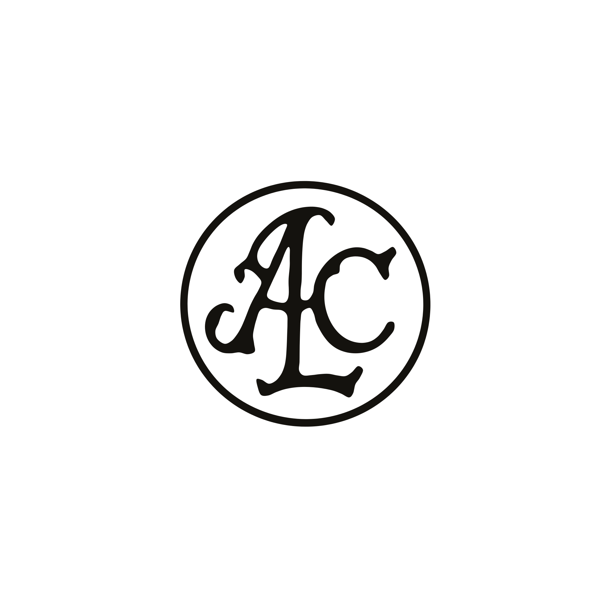
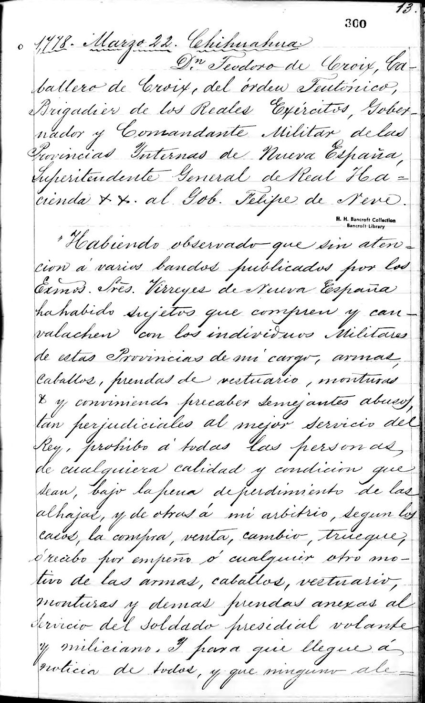
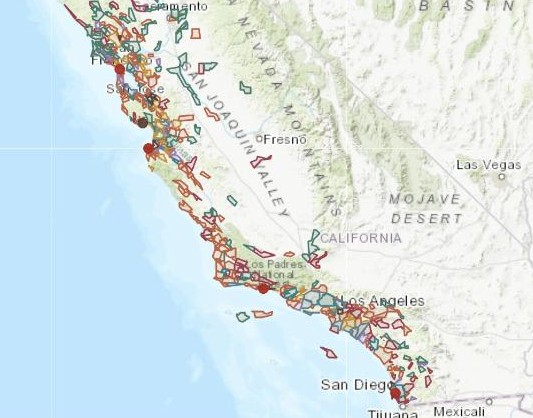
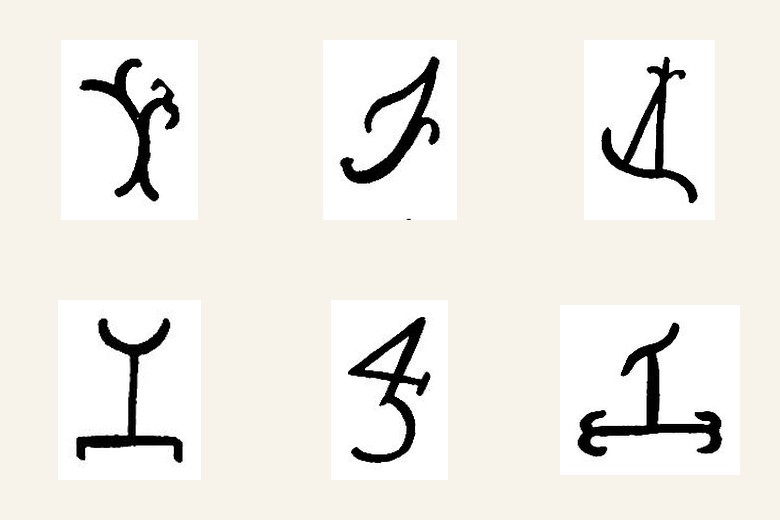
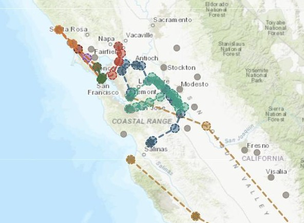
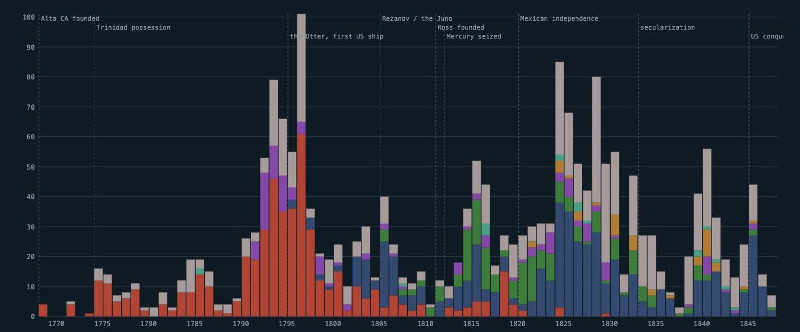
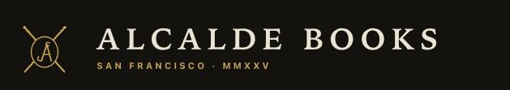

I rebuild the archival record of early California as open, citable data. The core of the work is the Archives of California, the Savage transcripts at the Bancroft Library, the only surviving copy of the province's government archive after 1906.

A documentary calendar of the Savage transcripts
Volume by volume, each entry keyed to its manuscript leaf, with both page systems recorded and every document linked to the scan it was read from.
34,899 documents · 63 volumes
A register of the land grants
Every grant and claim, mapped where a surveyed boundary survives, with the diseños, the grantee dynasties and the registered cattle brands.
672 grants · 535 mapped
Marks of ownership, recorded in the county books
Each rancho registered its hierro. The marks survive in the brand books where the boundaries did not.

Interactive cartography of the archival record
Expeditions, engagements and imperial contests reconstructed point by point. Every pin carries its source; uncertain locations are drawn so you can see the uncertainty.
12 maps · 1,339 features
Documented vessel visits to the Californias
Each visit cited to the archival or published source it rests on, with flags, anchorages and outcomes. Currently a draft release.
2,072 visits · 400 vessels
Californian & Western Americana
A curated shop of history and rare books, selected and described by a trained historian.
In preparation.